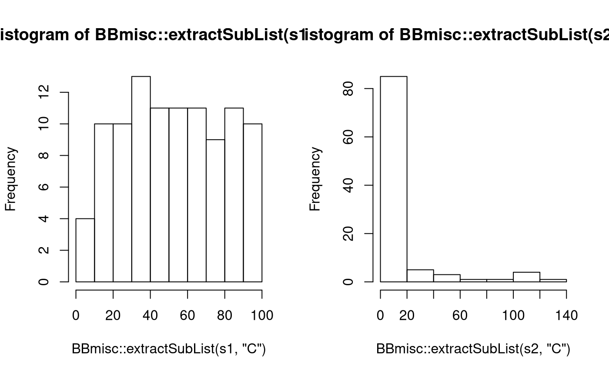

This Vignette is covers the ParConfig objects, what they contain and how they are created.
ParConfig
First we will create a ParConfig so we can have a look at what we need.
ps = makeParamSet(
makeIntegerParam("k", lower = 1, upper = 20)
)
pc = makeParConfig(
learner = "classif.knn",
par.set = ps
)
str(pc, 1)## List of 6
## $ par.set :List of 2
## ..- attr(*, "class")= chr "ParamSet"
## $ par.vals : NULL
## $ associated.learner.class: chr "classif.knn"
## $ associated.learner.type : chr "classif"
## $ associated.learner.name : chr "knn"
## $ note : chr ""
## - attr(*, "class")= chr "ParConfig"Now we already saw a minimal way to create a ParConfig out of a ParamSet and the according learner. Instead of the string "classif.knn" you can also directly pass the mlr learner object. We see that par.vals and note is not used.
par.vals is to store fixed parameter settings that we want to use to override the defaults of the learner.note is just for leaving a comment that will eventually be visible online once you decide to upload your ParConfig.ParConfig
## Type len Def Constr Req Tunable Trafo
## k integer - - 1 to 20 - TRUE -## NULL## [1] "classif.knn"## [1] "knn"## [1] "classif"getParConfigNote(pc)## [1] ""ParConfig
(pc.reg = setParConfigLearner(pc, "regr.kknn"))## Loading required package: kknn## Parameter Configuration
## Associated Learner: regr.kknn
## Parameter Set:
## Type len Def Constr Req Tunable Trafo
## k integer - - 1 to 20 - TRUE -setParConfigLearnerType(pc.reg, "classif")## Parameter Configuration
## Associated Learner: classif.kknn
## Parameter Set:
## Type len Def Constr Req Tunable Trafo
## k integer - - 1 to 20 - TRUE -setParConfigNote(pc.reg, "A note...")## Parameter Configuration
## Associated Learner: regr.kknn
## Parameter Set:
## Type len Def Constr Req Tunable Trafo
## k integer - - 1 to 20 - TRUE -setParConfigParVals(pc.reg, list(scale = FALSE))## Parameter Configuration
## Parameter Values: scale=FALSE
## Associated Learner: regr.kknn
## Parameter Set:
## Type len Def Constr Req Tunable Trafo
## k integer - - 1 to 20 - TRUE -setParConfigParSet(pc.reg, makeParamSet(makeIntegerParam("k", 3, 11)))## Parameter Configuration
## Associated Learner: regr.kknn
## Parameter Set:
## Type len Def Constr Req Tunable Trafo
## k integer - - 3 to 11 - TRUE -ParConfig
We already saw how to minimally create a ParConfig in the first example. Let’s look at more examples:
lrn = makeLearner("regr.kknn")
makeParConfig(
par.set = ps,
learner = lrn,
par.vals = list(kernel = "gaussian"),
note = "This is just an example with the kernel set to 'Gaussian'."
)## Parameter Configuration
## Parameter Values: kernel=gaussian
## Associated Learner: regr.kknn
## Parameter Set:
## Type len Def Constr Req Tunable Trafo
## k integer - - 1 to 20 - TRUE -ParConfig without a specific learnermlr differentiates learners pretty strictly from their type (e.g. classification, regression, cluster etc.) although sometimes they share the same R function in the underlying package. If we want to allow the ParConfig to serve for classif.knn as well as regr.knn we have to construct it less strict like the following:
pc.less = makeParConfig(
learner.name = "knn",
par.set = ps
)
str(pc.less, 1)## List of 6
## $ par.set :List of 2
## ..- attr(*, "class")= chr "ParamSet"
## $ par.vals : NULL
## $ associated.learner.class: NULL
## $ associated.learner.type : NULL
## $ associated.learner.name : chr "knn"
## $ note : chr ""
## - attr(*, "class")= chr "ParConfig"Or if you are unsure about the learner name but have the mlr learner object:
lrn = makeLearner("classif.knn")
pc.less = makeParConfig(
learner.name = getLearnerName(lrn),
par.set = ps
)
str(pc.less, 1)## List of 6
## $ par.set :List of 2
## ..- attr(*, "class")= chr "ParamSet"
## $ par.vals : NULL
## $ associated.learner.class: NULL
## $ associated.learner.type : NULL
## $ associated.learner.name : chr "knn"
## $ note : chr ""
## - attr(*, "class")= chr "ParConfig"Note: The function generateParConfig will return a ParConfig for a given learner with a default tuning ParamSet.
ParamSet
Most of the power of a ParConfig lies it in the ParamSet which is part of the ParamHelpers package. The most important features will be explained in the following.
ParamSet
If we want to create a ParamSet for a specific mlr learner it is always helpful to check which parameters are available.
lrn = makeLearner("classif.ksvm")
getParamSet(lrn)## Type len Def
## scaled logical - TRUE
## type discrete - C-svc
## kernel discrete - rbfdot
## C numeric - 1
## nu numeric - 0.2
## epsilon numeric - 0.1
## sigma numeric - -
## degree integer - 3
## scale numeric - 1
## offset numeric - 1
## order integer - 1
## tol numeric - 0.001
## shrinking logical - TRUE
## class.weights numericvector <NA> -
## fit logical - TRUE
## cache integer - 40
## Constr Req Tunable Trafo
## scaled - - TRUE -
## type C-svc,nu-svc,C-bsvc,spoc-svc,kbb-svc - TRUE -
## kernel vanilladot,polydot,rbfdot,tanhdot,lap... - TRUE -
## C 0 to Inf Y TRUE -
## nu 0 to Inf Y TRUE -
## epsilon -Inf to Inf Y TRUE -
## sigma 0 to Inf Y TRUE -
## degree 1 to Inf Y TRUE -
## scale 0 to Inf Y TRUE -
## offset -Inf to Inf Y TRUE -
## order -Inf to Inf Y TRUE -
## tol 0 to Inf - TRUE -
## shrinking - - TRUE -
## class.weights 0 to Inf - TRUE -
## fit - - FALSE -
## cache 1 to Inf - TRUE -As we now these parameters are not tunable because they don’t have finite box constraints and it’s also hard because there are so many. That’s why we have to build our own. The function makeParamSet will take all our single parameters to create a ParamSet. Parameters of all different kinds can be created with the make*Param functions. To name the most important ones
makeNumericParam(id, lower, upper)makeIntegerParam(id, lower, upper)makeLogicParam(id)makeDiscreteParam(id, values)ps.svm = makeParamSet(
makeNumericParam("C", lower = 0, upper = 100),
makeDiscreteParam("kernel", values = c("polydot","rbfdot"))
)Attention! Here we see the first problem: The parameter C is more sensitive to small changes for values around zero. To take that into account we will use the trafo argument.
ParamSet with a transformationps.svm.trafo = makeParamSet(
makeNumericParam("C", lower = -5, upper = 7, trafo = function(x) 2^x),
makeDiscreteParam("kernel", values = c("polydot","rbfdot"))
)Let’s compare randomly drawn values:
s1 = sampleValues(ps.svm, n = 100)
s2 = sampleValues(ps.svm.trafo, n = 100, trafo = TRUE)
op = par(mfrow = c(1,2))
hist(BBmisc::extractSubList(s1, "C"))
hist(BBmisc::extractSubList(s2, "C"))
par(op)As transformations can be arbitrary functions they can be used for other useful purposes as only generating uneven numbers, which makes sense for knn classification to not have ties:
ps.knn = makeParamSet(
makeNumericParam("k", lower = 1, upper = 6, trafo = function(x) 2*x-1)
)ParamSet with dependent / hierarchical parametersFor our SVM example we actually would like to tune the parameter sigma for the rbfdot kernel and the degree for the polydot kernel. So the sigma parameter should only be active when kernel is set to rbfdot and degree should only be active for kernel == "polydot". To model such dependencies or hierarchical structures in the parameter space all make*Param functions have the requires argument which can be used like follows:
ps.svm.req = makeParamSet(
makeNumericParam("C", lower = -5, upper = 7, trafo = function(x) 2^x),
makeDiscreteParam("kernel", values = c("polydot","rbfdot")),
makeNumericParam("sigma", lower = -5, upper = 5, trafo = function(x) 2^x, requires = quote(kernel == "rbfdot")),
makeIntegerParam("degree", lower = 1, upper = 5, requires = quote(kernel == "polydot"))
)Let’s generate a LHS design to see the effects of the requirements:
generateDesign(6, ps.svm.req)## C kernel sigma degree
## 1 -1.2177714 polydot NA 2
## 2 4.2525139 rbfdot -4.188279 NA
## 3 5.6058098 polydot NA 1
## 4 1.7764093 rbfdot 3.601943 NA
## 5 -0.6790498 polydot NA 4
## 6 -3.2748962 rbfdot 2.639787 NAParamSet with data dependent parameter spacesFor some learners the tuning space varies from the data presented. A prominent example is the mtry parameter of the randomForest which determines how many randomly drawn variables are to be considered in every split. The default is sqrt(p) with p being the number of variables in the data. Naturally we might want to set the boundaries for that value around that default. This is possible using expressions like in the following example:
ps.rf = makeParamSet(
makeIntegerParam("mtry", lower = expression(floor(sqrt(p*0.25))), upper = expression(ceiling(sqrt(p*0.75))))
)Which variables can I use in the expressions?
getTaskDictionary(task = iris.task)## $task
## Supervised task: iris-example
## Type: classif
## Target: Species
## Observations: 150
## Features:
## numerics factors ordered
## 4 0 0
## Missings: FALSE
## Has weights: FALSE
## Has blocking: FALSE
## Classes: 3
## setosa versicolor virginica
## 50 50 50
## Positive class: NA
##
## $p
## [1] 4
##
## $n.task
## [1] 150
##
## $type
## [1] "classif"
##
## $n
## [1] 150
##
## $k
## [1] 3p number of features / variables in x
n.task number of observations in the tasktype type of the task like classif, regr, cluster and surv.n number of observations in the subsetk number of classes in targettask the complete task objectAttention: This feature is not implemented in mlr yet. As a consequence the expressions have to be pre-evaluated before they can be used for tuning. This also means that a smaller value for n in each cross-validation split will not be used as well as a feature selection won’t affect p.
To convert the ParamSet with expressions to a normal ParamSet we call the following:
evaluateParamExpressions(ps.rf, dict = getTaskDictionary(iris.task))## Type len Def Constr Req Tunable Trafo
## mtry integer - - 1 to 2 - TRUE -evaluateParamExpressions(ps.rf, dict = list(p = 100, n = 1000))## Type len Def Constr Req Tunable Trafo
## mtry integer - - 5 to 9 - TRUE -